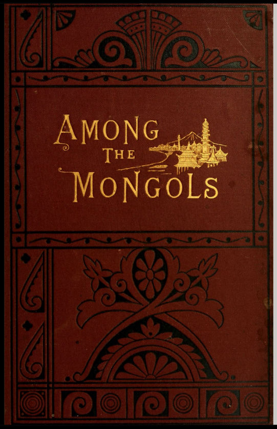

🏠
日
月
縦書き／横書き
 （マニ車）
（マニ車）
| 「モンゴル人の友となりて」 分冊8 | |
| 佐藤武久 （編集） | |
| (2016) | |
編集者のまえがき
この電子書籍は「蒙古人の友となりて」（ジェームズ・ギルモア 著 (1883.05) 後藤冨男訳 (1939.09.06)）を分冊化し、第17章と第18章を分冊8として電子書籍化したものです。電子化にあたり「蒙古」を「モンゴル」に、「喇嘛」を「ラマ」、「包（パオ）」を「ゲル」に置き換えるなど旧仮名使いや古い言い回しの一部を改訳しております。
第17章 キリスト教とモンゴル人
第18章 モンゴルの仏教
なお、1883年5月ロンドンで公刊された英文の原書「Among the Mongols」の無料のeBookが次のサイトで入手でき、iBooksで閲覧できます。
https://archive.org/details/amongmongols00gilm
さらに、もう一つの著作も下記サイトで入手できます。
「JAMES GILMOUR OF MONGOLIA HIS DIARIES LETTERS AND REPORTS」
総目次
訳者より
はしがき
第1版原序
第１章 草原「上陸」
第２章 古語点描
第３章 冬のバイカル
第４章 ブリヤート伝道会の遺跡
第５章 乗馬の練習
第６章 モンゴル・ゲルの一夜
第７章 経験を購う
第８章 沙漠旅行の要領
第９章 モンゴル人の食事
第１０章 モンゴル役人の裁き
第１１章 ドロン・ノール
第１２章 ウルガ（フレー）
第１３章 五台山
第１４章 カルガン（張家口）
第１５章 モンゴル人の診療
第１６章 モンゴルに福音を使いす
第１７章 キリスト教とモンゴル人
第１８章 モンゴルの仏教
第１９章 草原の正月
第２０章 モンゴル人の結婚
第２１章 親しみ易いモンゴル人
第２２章 モンゴルの盗人
第２３章 モンゴルの法廷
第２４章 モンゴルの監獄
第２５章 遊牧民の酒
第２６章 真夏の廟会
第２７章 モンゴル人の服装
第２８章 モンゴルのイソップ
第２９章 モンゴルの説話
第３０章 モンゴルの狼
第３１章 モンゴルと北京
(EOF)
「モンゴル人の友となりて」
ジェームズ・ギルモア 著 (1883.05)
後藤冨男 訳 (1939.09.06)
佐藤武久 編集・電子化（2016.1.25)
（原書の表紙）

（ギルモアの肖像）

第17章 キリスト教とモンゴル人
キリスト教は無用の長物ー仏教の荘厳ーキリスト教真なれば仏教は嘘ーキリスト教の多様性ーみすぼらしい聖書ー聖書に経文なしー三位一体ー受難ー復活ーなぜ聖書を真実というか？ーモンゴル人も原則としてその罪人であることを認めるー数珠の功徳ー仏教は自力本願の救いを説くーキリスト教は放縦ーキリスト教は難しすぎるー祈りに対する応えー真面目な抗議と不真面目な抗議ーいろいろの議論異論に答えるーモンゴル人の帰依とその障碍
モンゴル人が、まず最初にキリスト教について抱く感じのうちで、最も困るものの一つは、キリスト教は彼にとって、無用の長物に思えることである。仏教があるのに、なぜほかの宗教が必要なのか？ 仏教のどこに不足があって、別の宗教を欲するのか？ 仏教は彼の魂のあらゆる要素を満たし彼はまた限りない尊敬を仏教に抱いているではないか。ここに言う仏教とは、清浄にして簡素な教理を持つ仏教一般ではなくして、現在モンゴルに行われている謂わばそれの写し、ある意味では、経典を文字通り守りさえすれば、人間の欲するものは、可能不可能を超越して何でも解決しようとする、その仏教のことである。
モンゴル人の解釈する仏教とは、その抽象的教理・経典の分量・寺院の威容と数・堂々たる儀典・悠久の歴史・世界における仏教帝国の広さ・さては数ある活仏の名声・故土にあって活仏の演ずる重要な役割等、あらゆる点において堂々たる組織である。モンゴル人は圧倒的な力で抑えられて、この信条に疑いを挿み、その強制する義務を怠るものはただ1いないないほどである。したがってモンゴル人にとっては、キリスト教は無用の長物であるわけだ。
しかし、この最初の難関をのりきって、キリスト教の教えに耳を傾けようとするものは、やがってまた一つのさらに重大な考えにとらわれる。すなわち、キリスト教が正しいならば、仏教は間違っている、ということである。彼はこのを考えに慄然とする。仏教が間違っている！ 山のように経典があり、昔から数かぎりない奇蹟を行い、幾多の活仏は次から次へと転生している！ それが間違っている！ 彼は反問するーーーこのように連綿と相継ぎ、遠近に広布し繁栄して、人間性に深く根ざして、無数の人々の熱烈に信仰し、幸福に瞑目するーーーその宗教が虚偽であり得ようか！ 偽りならば、どうしてそんなに栄え得たのか？ 偽りがそんなに強大になり得ようか？
また、彼はこうも言う。全ての宗教の中でキリスト教のみが真実であるとするならば、どうして今日まで我々に近づかなかったのか？ 今日キリスト教は一千八百年も前に生まれている、それなのにわれわれはようやく今初めて耳にしたに過ぎない！ もしキリスト教だけが真実であって、その教えがそんなにも重要であるなら、我々が今までこれを知らずに過ごすなどと言うことがあり得るだろうか？ なぜ、もっと早く普及されて、真実なその教えをもって他の誤れる宗教を克服しなかったか？
また、モンゴル人がいよいよキリスト教を受け入れるに立ち至るや、今度は一口にキリスト教といっても、いろいろの宗派があるのでさらに困惑する。昔はギリシャ協会に属するロシアのキリスト教があった。またおそらくローマン・カトリック教のことも見聞きしているであろう。ローマン・カトリック教はモンゴルを始めこれに隣接する地域の漢人間に、偉大な勢力を占めている。今また第三のキリスト教が 出現したのだ。しかもロシア人は、これを己の教えをもって一番良いと言うし、ローマン・カトリックも負けず劣らず同様なことを主張するし、プロテスタントはまた、譲らないばかりでなく、どれよりも自分達の宗派が一番良いと頑張るのである。
モンゴル人は、単にキリスト教のみでなく、回教とも接触するし、独特の宗教を奉ずるする漢商人とも知り合いになる。「黒ラマ」（ロシアの僧をモンゴルではこう呼んでいる）、ローマン・カトリックの神父、プロテスタントの宣教師、あるいはいわゆる「白帽」（回教徒）などの間で、モンゴル人は頭が混乱してしまって、いずれに就いたら良いのか分からないという。もっとも、この種の難関はありふれたものではなく、むしろ知識欲の旺盛な、右の四流派を進んで研究してみようとするごく少数の人々に限られていると言ってよい。
一般に見逃しがたいと思われるのは、キリスト教聖書が、膨大な仏典に比べて、あまりに薄っぺらだということである。学識あるモンゴル人の中でも、仏典が何巻あるか正確に述べ得るものはほとんどない。場所と版を異にするにつれ、できあがりの相違していることもその理由になるが、例えば経典の一つをなすガンジュル教は百卷余りを収め、その解説をなすダンジュは二百余卷に及ぶのである。
仏寺に詣でると、必ずこれらの経典を指し示されるが、往々にして大本堂の四つの壁にぎっしり詰まっている。
一巻は長さ二尺ばかり、巾七、八寸、厚さ四、五寸もあって、丁重に黄色い覆いがかけてある。まことに堂々たる光景であって、もし誰か富裕な人か団体がこれを借用できることにでもなれば、それこそ持ち運びに駱駝の縦列か一続きの荷車が必要である。こういうことを念頭に置いて考えれば、モンゴル人が、キリスト教聖書というものが、宣教師が傍からとり上げ、テントの向こう側にいる人にお読みなさいと手渡しできるような、手頃な一卷にすっかり収まっていると聞いて、驚くのも無理からぬことと思う。
モンゴル人は、我々の聖書や宗教が、その勤行・祈祷などでやるような経文の暗唱や反復を行わぬと知って、何よりもたまげてしまう。教典は、何でもかんでも覚えて反復暗誦するものだと思っているらしく、我々が「主の祈り」の他には、一向「ノム」（モンゴル語で書物のこと）らしいものを有していないのを知って、仰天するのだ。
三位一体の本義は、初めはなかなか解らないらしく、それぞれの人物やそのあい互いの関係、さては「父」と「子」がなぜ同じ年であり得るのか、等という質問が続出する。人間の記録は不備なもので、到底十分には神性を伝え得ない、と説明すれば、疑問の一部はある程度まで解消する。またモンゴル人は難解なことには彼自身の宗教で慣れているので、キリスト教においてもその測り及ばないことに出会うと、「深奥な教えだ」と言ってあっさり認めてしまう。
「イエスの降誕以前にこの世にあって、死んで往った人はどうなったか？」という質問もしばしば受ける。」ーーー「イエスのみが救世主であるならば、イエス以前の人々は全然救われる道を持たなかったのか？」
主の犠牲の受難も彼には奇妙に思える。仏教によれば人間は犯した罪業の故に苦しみ、その苦を逃れることはできないからである。しかし、少し説明すれば、この点は直ちに納得する。
仏教では「輪廻」の理念が、教義のあらゆる方面に織り込まれているが、キリスト教の来世観はこれを全面的に否定する。「輪廻」はモンゴル人の渇仰する仏説の核心とも言うべく、その胸裡より切っても切り離し得ない。しかるにこの「輪廻」を否定するからは、あるいは両宗教が融合できないものでもない、という考えを根本から打破し、そしてここから幾多の困難が頭を持ち上げる。
もし霊魂が転生しないとすれば、魂は一体何処から生まれてきて、死後どこ行くのか？ 魂が現世以前にはないとするならば、それはやはり死と共に消え去るのか？ キリスト教の天国観は大いに受け入れられるらしいが、仏教徒は己の宗教によっても罪業に対する永劫の責苦をよく知っているにかかわらず、キリスト教の地獄観には恐れをなしてしまう。しかもそれがいつ果てるとも知らず。その責苦から逃れるべく、罪人自身の努力も、現世の友人の助けも、何ら効を奏さないと言われては尚更である。
理屈の上で、天国でまた友人たちに会える、というキリスト教の説を認めるとしても、彼は、では地獄へ落ちて、天国で会うことのできない人々はどうなるのか？ と反問する。彼らが地獄で苦しむの見て、それでもわれわれは幸いになれようか？ 神は彼らの苦悩をなんと見給うのか？ 神はそれを見ても平気であり得るのか？ もし神が全知であって、創造せられる以前より、そのような人は罪人となり、救いも及ばず地獄に堕ちて行くと知り給うならば、なぜこれを知る神は、愛と慈悲の権化でありながら、その人々を作られたのであろう？ 人類の祖先アダムとイブを、蛇の誘いから救い、この世の罪に穢れるのを防ぎ給わなかったのであろうか？
さらにモンゴル人は問うーーーいかにして人間の肉体は再生し得るか。荒野に捨てられ、地面にはさらされて、犬猿に貪られ、鳥についばまれた死体が、どこでどうして、再び一つに集められるのであろうか？
質問はなお続く。曰く、もし霊魂に転生がないならば、現世に苦しむ生物のあるのをどう説明するのか？ 飢え、病み、死にも等しい悲惨な生を貪る犬はどういう理由か？ 霊魂の転生がなく、前世に犯した罪の償いに生まれ変わってこの苦しみをするとしないならばこの犬は一体何であるのか？
草原のギルモア）
モンゴル人はまた時折、どうして我々が聖書にある来世を真実と知っているのかとも尋ねる。誰か死後来世に赴き、それを見てきて話したものがあるのか？ 彼はそう質問するだけでなく、それをきっかけに、仏説は実際に死から蘇った人の証言によるものだと断じて、己の教義の真実さを確証しようとする。
生きとし生けるものは罪人であるとのキリスト教教義も、罪人ではない人もいると主張する人々が少数ながらモンゴルにあって、しばしば論議の的となる。そういう人たちも、夫子自ら聖者であるとは少なくとも明言しない。ただ、そういう人がいる、あるいはいるそうだ、と言う程度に語る。しかし、ではどこにと、根掘り葉掘り問い詰める段になると、答えは曖昧になり、遠く西北の彼方に、という類のものになってしまう。したがって、この種の存在が、問題を出した当の本人にあってさえ、単に理論上のものに過ぎないことは明らかである。
モンゴル人には、原則として「諸人罪の人」との教義をやかましく説き立てる必要はない。彼らもそれを認めている。罪障消滅の必要も認めている。ただ彼らが躊躇するのは、キリスト教的方法による罪業消滅を受け入れることなのである。キリスト教的な罪の償いについて行う彼らの抗議の主なものは、その考えるところによると、キリスト教は罪を洗い浄めるためにする善行を良く評価しないという点にある。
なるほどその仏教は善行・徳行を教えて欠けるところがない。そしてその実行を促すために、罪業と消滅の教えを説く。要するに、あらゆる人は、死んでから生前の善行と悪業とが秤にかけられ、もし善行が勝れば賞せられ、悪業が多ければ罰を受けなければならない。このように考え行うべく教え込まれたものは、善徳はむしろ当然の義務で、少しでも罪の浄化に役立たぬとは言われたくないに違いない。
仏教はまた、数珠をつまぐり経文を唱えれば、罪業も消滅すると教え、名だたる寺に遠路遍歴すれば、来世にそのご利益をもたらし、生前積んだ罪業の消滅を望みうると説く。しかるにキリストが、数珠や祈祷や巡礼は罪の浄化に無力であるというのを聞き、大いに驚いて考える。
もしキリスト教を肯定するならば、彼は実に長い間、役にも立たないことに無駄骨を折ったことになると。しかしながら、いかなる手立ても、罪をぬぐうことはできないと言われると、彼はさらに仰天する。そして、他にご利益を受ける道さえあれば、読経や巡礼の長い努力を無にして潔しとする連中も、人間の救われ難さを説き聞かされては、驚くばかりか不快さえ感ずる。
モンゴル人は往々にしてキリスト教によって救われるのは甚だ造作もないことだと思いがちである。キリスト者が、宣教師さえ鳥を殺し、肉を食し、そればかりか妻さえも娶り、それでいて、破戒の責を免れていると知って意外に感ずるが、仏教に数限りなくある戒律・禁断。宣誓修行など、キリスト教は持たないと言われては、その驚愕は尚更である。
しかして、キリスト教の自由を理解し始めると、彼はたくまずして主のみ言葉を口すさむーーー「吾が軛は易く、吾が荷は軽ろし。」
されど、理解をさらに深めれば、意見は再び変化する。キリストの言う救いとは、積もり積もった古い罪業や現に犯しつつある罪の除去のみでなく、罪そのものから心を解放し、魂の再生を意味するものなることを学び知るとき、そんなことはとても望めないと考えて、このような浄化を受けたがらない態度を示す。悪魔に挑み、心裡の悪を追い除けようと努力する、この責任を彼を恐れるのだ。一方において、彼はこの戦いに勝てば勝つほど、何のご利益も期待できないのだと思ってがっかりもするし、また他方においては、この骨の折れる戦いを独力で戦い抜かねばならないと考えて、気を重くするからだ。仏教による救いとは、自力本願によるところが多いので、こうした間違いに陥るのも無理からぬことである。
モンゴル人にキリスト教を説いて感ずる大きな困難は、モンゴル人というものは、これまでずっと、自力本願による救いの教えに慣れているので、キリスト教のいう、彼自身の中に、全能の救世主がなしたもう救いということが、なかなか理解されないことだ。キリスト教的救いにおいては、人のなすべき役目とは、己を統す神の御力に易易として帰依する、その従順な態度であって、己を導き、己を災厄より護り、己の力となり給う神の歩みを、ただ謙譲に跡付ければよい。神が心真なる信奉者は、罪の宥されたる喜びにより、やがて天国の幸に浴せんと約して宣うたと説いても、容易には飲み込めない。
祈りに対する応えの問題も、時折議論の種となり、計画的に罪を犯し、しかも、祈りによって許しを得て、こんなふうに罪を犯しながら、罰を免れる者もいるかもしれない、という人たちもある。この種の異論は、人間の来世を善悪の多寡によってのみ律しようとする、仏教の堕落に直接の原因を持つものである。時として、キリストにとらわれず、主上の神にのみ無限の信仰を捧げたなら、なお一層良くはないかと疑うものもあり、またキリスト教をかなり学んだものは異口同音に、キリストを知ることなく死んでいった異教徒はどうなったかと訊ねる。
仏陀は実在したのであろうか、とも折々質問される。また、もし仏典を真理として受け取れなければ、聖書にのみ真を置けるとは言い得まい？
これらは何れもキリスト教に対して、モンゴル人の脳裏に去来する知的・心的論難である。こうした異論を唱える者のなかには、真実思い悩んでいるものもあろうが、大部分は単に討論の興味から持ち出されるのであって、キリスト教是認の途上にある障害というよりは、議論の格好の題目として選ばれたかの観がある。
かかる質問の多くは、モンゴル人に得心の行くように、説明・回答し得る。また聖書に扱われていない論題や、解し難い教義については、こう説明すれば最も効果があろうーーーすなわち、聖書とは万般の問題を解決し得る完全無欠の論説集ではなく、ただ神の国に至る道を明示する案内書である。旅人を助け導きはするが、余のことは彼が彼岸に到達した時、見るべくまた知るべきである。北京に赴くモンゴル人は多いが、道案内書はよくできてはいても、京都の百端千緒あるいは全く記してないのもあり、あるいは曖昧に述べているにすぎないことを何人も初めて気づくであろうと。
ここにまたさらに別の困難で、具体的になるがゆえに、キリスト教肯定の事実上の障害となるものがある。モンゴル人にとって、キリスト教を宣誓することは破滅に直面するに均しい。モンゴル人に一貫するキリスト者があり得たとしても、仏教徒である同胞に伍して、相変わらず平原に生活し得るか、疑いなきを得ない。ラマの勢力は絶対的で、民衆もあげて信仰に固執するの観ある時、一人仏教徒の義務を拒めば、ついには故郷に留まりえなくなりはしないか、キリスト教を知った者が、宣誓を要請されて、もしも宣教師が保護し生活を与えてくれるならば、その言葉に従おうと言ったこともある。同様に、宣教師が衣食を与え、将来を保証するなら、子供を差し出そうと言った親たちもある。
キリスト教の真理を確信し、聖霊によって強く動かされたものは、迫害に臆せずキリストを宣誓するに至るであろう。したがって少数でも共にこれを宣言するものがあれば、その後の困難は著しく減ずるであろう。モンゴルには、公権を持たず、生来の人格力によって、民衆に偉大な感化を及ぼす人物がかなりいる。もしこれらの中の何人かが、先んじてキリストを宣誓するに至れば、事後の信奉者の困難はよほど緩和される。しかし、もちろん、この種のことを謀ってなすべき事柄ではない。ただ真理が了解されさえすれば、神がその思し召す時期と方法をもって、すべての難関を突破し、モンゴル人の心にも聖霊の力を授け、神の僕の芽を養い、後に生まれる信奉者の道を均らし給うことは疑いない。
(EOF)
第18章 モンゴルの仏教
モンゴルに現存する仏教ー仏教の信者に対する支配力ーモンゴル人の考を高尚にしたー霊魂不滅ー十悪ー五逆ー因果応報ー博愛ー地獄極楽ー祈祷の効験ー説教の方便ー動機を重んずー仏教とキリスト教の類似ーラマの過多と高踏独善ー仏教は物的繁栄を阻害すー知識の退化ーラマの強横ーラマの欺瞞ー活仏の制度ーラマ制はラマ自身にも民衆にも呪詛であるー仏教の礼拝には理解が伴わないー仏教の礼拝は低俗であるー仏教の善根は害を伴いがちー仏教は当然の行為まで罪悪視すー仏教は神聖を欠くー仏教は掠奪者である
本章においては仏教を系統的に述べようとするのではない。その問題については権威ある著述がすでに豊富にあり、多少とも遍く知られている。ここに扱いたいと思うのは、仏教の迷信的側面ーーー今日モンゴル人の生活習慣に体現されているその現実的部分の考察である。
モンゴルと接触するようになって、宣教師が最初に感ずるのは、仏教が彼らに絶対の支配権を握っていることである。道行くモンゴル人を見れば、おそらく馬に乗り行く時にさえ、経文を誦し、数珠をつまぐっている。習慣に従って、「どんな御用で、どこへいらっしゃるのですか」と聞けば、「お参りに」と答えるに決まっている。彼と共に寺に詣れば、塵に塗れて、口を動かしながら、手に手に数珠を持って、やはり巡礼する仲間の一人であることを見出すであろう。社前に額ずき、仏像ごとにひれ伏し、次々に眼にうつる尊像に真剣な敬虔の様を示すのである。モンゴル人が町をなして相集まる所に行けば、店舗の大半、取引の大部分は仏像や仏画、さては千差万別の仏具を取り扱っている。モンゴルの地そのものに足を踏み込めば、まず遠目にも色彩美しく金色に映える、豪華壮麗な寺廟の光景が目を奪うであろう。テントに近づいて最も目立つのは、その頂きに翻る祈祷の幟と旗棹である。テントに入れば、戸口から頭を突っ込んで眼前に認められるのは仏像・掛け物・供物・真鍮の器を一家の仏壇である。茶の接待を受ければ、飲めとすすめられる前に、まず初の供え物として、テントの灯り窓から少量の茶を外に投ずる。食事の饗宴にあずかれば、やはりお初穂を火の神に捧げてから、ご馳走に張り付くありつく段取りになるのだ。夕方になれば小さな黄油の灯火を点じ、清浄な供え物として仏壇に据えるのを見受けるだろう。また就寝の時間となって衣服を着替えれば、だれもかも胸のところに、着物に縫い付けた護符かガラス張りの金具に納まった仏像を身に付けて居るのを目撃するであろう。着物を脱ぐ間も熱心に題目を唱え、全部が床に就くまで決して祈祷は止まない。朝起きれば起きるで、またぞろ耳に響いて来るのは読経の声である。見送りに立った主人はおそらく道しるべとしてをオボー（石塚）を教えてくれるだろうが、このオボーは、読経裡に蒐集した石を安置し、塚の上には祈祷の幟が翻り、また土地を治める神を祀ってあるという三重の理由から、まことに神聖なものなのである。
（護符）
そればかりではない。モンゴルの仏教は、一見なんの関わりもなさそうな行為にまで、善悪や功徳・罪障など因縁を持たせる。例えば、与えてはならない日があるかと思えば、買っても良いが売ってはいけないとか、避けねばならぬ場所だの、しばしば行かなければならない場所だの、仕事をして良い時間、悪い時間、等々枚挙に遑のないほどである。いかに些細な事でも、ラマを通じてご宗旨に良いか悪いかを、聞いてからでなければ何一つなし得ない。またその相談の結果たるや、大概は非常な不便や厄介をもたらすと思えば間違いない。にもかかわらず、彼らはその言いつけに従う。その宗教は霊魂を形作り、その精神生活に影響を与えようとするのみか、着物の色や形までも決定しようとする。世界中どこ行っても、信者を押さえつけて、こんなに自由を奪う宗教はありはしない。しかしまた、仏教のモンゴルにおけるが如く、普遍かつ完全に、一国を支配している宗教は他に見いだしがたいであろう。モンゴル人の自ら言うところだが、信仰の度に強弱こそあれ、国中を探しても不信心者は一人もいないとのことである。私も部分的にこれを信ずる。この仏教王国の普遍性あってこそ、人煙稀な不毛の地に、かくも豪奢な寺院を建設し得たのである。
モンゴル人は、その仏教に帰依する前は、無知蒙昧にして、迷信と残虐をこととし、母親が五十歳に達すれば、その命を断つという、蛮風さえ有していた、と口癖のように言う。しかし現在の自分たち、またその行為を見てもらいたいーーーこれは全て仏典のもたらしたものである、と。
仏教の根本義は「霊魂不滅説」である。彼らの心はこれを確固不動に把握している。この教義を一瞬でも疑い、あるいは問われて答えに躊躇するものを、かつて私は見たことがない。彼らは、霊魂が肉体とともに発生し、肉体とともに死滅するという考えを軽蔑する。霊魂は悠久永遠の歳月、世代を転じて生存しており、今後も功徳罪障に従って誕生の貴賎を異にするが、やはり同一の霊魂、不変の精神存在として無限に生きてゆくであろう。過去において魂の死したる時なく、未来また不滅であろう。これは単に彼らの宗教上の信条として、識者が討論の題目とする教理ではなくして老若男女、学の有無を問わず、あらゆる人の心に常に存する感情である。
肉体はただ魂の容器である。あたかも、家屋が住人でない如く魂は人間ではない。この明確にして拘束なき霊魂の対する信念は、魂の抜け去った屍体に対する扱いに最も明白に示されるのであって、これを荒れ野に捨てて、狼や鳥の餌食にして顧みない。
これに加えて、彼らは霊魂の存在を、人間ばかりでなく、おおよそ生あるものの中に認める。鳥獣昆虫、爬虫類までいずれも永遠にして活動を可能ならしめる魂によって息吹くのである。これら生物の肉体は、単に魂の容器である。モンゴル人は己自身の魂も、かつてこれらの生を受けたことがあるかもしれないし、また今後こうした生を受けるかもしれない、と想像する。モンゴルは人煙稀であるから、モンゴル人は常に淋しい旅や牧畜をするが、我々のように孤独ではない。なんとなれば、至らぬところその周囲には、その追う畜群にも、その乗る獣類にも、飛び行く鳥にも、悩ます昆虫にも、彼らは一様に魂の存在を認めるからである。
モンゴルの宗教もまた十戒を持つが、モーゼのそれとは異なり、十悪（十の黒罪）を列示したもので、肉体の犯すもの、口舌の犯すもの、心神の犯すもの三種に分かたれている。肉体に関するものは三、殺生・邪淫・偸盗であるが、口舌のそれは妄語・厳しい言葉・悪口・無駄話の四者であり、心の三つは、貪欲・不正・異教である。殺生とは、殺人のみでなく、あらゆる動物、昆虫や爬虫類の生を奪うことを意味する。
しかし罪はこれで尽きない。十悪に加えて、五逆（ジャブサル・ウグイの意）がある。ジャブサルとは、合間・き裂・小さな隙間を意味し、つまり時間的・空間的の間隙のことである。黒罪は無論重く、恐るべき煉獄の刑罰を受けるが、しかしそれにはまた許しの一時も間断する。ところがジャブサルなき罪となるとさらに悪く、小止みなく続く地獄の責め苦に苛まれるのだ。五逆とは、殺父・殺母・殺阿羅漢・破和合之僧・出仏身之血これである。ここに阿羅漢とは、一般の僧侶より宗教的に重責にある博識のラマを意味する。また、仏身の血を出すとは、比喩的表現で、ちょうど旧約聖書第六章の「神の子を生きながら十字架にかける」をもって、神を辱める背教を言うに似ている。
いかなる宗教も、仏教のごとく加護を約束するものはあり得ないが、また仏教ほど刑罰を持って威嚇する宗教もない。モンゴル人は、来世はもっぱら現世の行いによって決まると思っている。死に臨んでその善行と悪行と秤り合わされる。善が多ければ、浮かぶことができ、悪が重ければ浮かばれない。これあるがゆえに、彼にあってその宗教は極めて実用的なものになってしまうのだ。長途の骨の折れる、苦しい、しかも費用のかかる巡礼に出かけるのも、それが功徳になると言われるからである。寺廟やラマに高価な喜捨を行うのも、それによって陽報を得ようと思うからだ。飢えたるを養い、衣薄きに着せ、渇きたるに茶を振る舞い、弱きを助けるーーーいずれも応報があって、きたるべき運命を定める錘となる。悪しきを避け、正しきに就かんと務めるのも、報いを希うからだ。一つの罪も悪の秤を重くし、下等界に引きずり込むが故に、彼は一切諸悪を免れようとする。あたかも草木がそれぞれの種子に従って成長するごとく、善は必ず喜悦を生み、悪は必ず苦悩を生む。賤しいものにする労りも、至高のものにすると同じ陽報をもたらすと、宗教が約束すればこそ、己に近づく生きとし生けるものに慈悲を施すのである。かくして功徳を積むことがモンゴル人の最も大きな関心事である。
かくてこの宗教は、モンゴル人に、崇高なる博愛の教訓を与える。おそらくモンゴルほど残虐性の影を断っているところは他にないであろう。家畜がその労苦に憐憫をかけられ、飼い主の可能な限りのいたわりを受けるばかりか、昆虫や爬虫類の取るに足らぬ生物に至るまで、心して取り扱われるのである。モンゴル人のこの習性的な慈悲を示すものに、平原における馴れきった禽鳥がある。駱駝の積荷に鳥がとまって、叱りつける荷主の目前で、漢人のラスクやモンゴル人の羊肉を、落ち着き払ってついばんでいる。庫倫の市場では、鷹が舞い降りてきて、ぼんやりしていると食べ物をかすめるが、それでもこの大泥棒をちょっと叱るだけで済ませてしまう。燕は燕で年々モンゴル人のゲルの中に巣を作って、雛を育てる。モンゴル人は、いかにささいなあるいは人困らせなものも、いやしくも生あるものにはことごとく慈悲をかけ、苦痛をいたわるらしい。わが親愛なる光頭の駝夫は一夜蚊の大群に襲われ、光った脳天にまといつく始末に気も狂わんばかりであった。その夜、不意の寒さで翌朝起きてみると一匹の蚊も飛んでいなかった。縮み上がって、ゲルの内側にへばりついている蚊を見やって、彼の曰く、「やれやれ蚊は凍え死にしてしまったんだ！」。そして、深甚なる同情の思い入れで、「ホアルヘ、ホアルヘ」とこんな場合に憐れみを表現するモンゴルを付け加えたものである。それにはいささかの冗談気も、偽善もなかった。俗に「極楽」というのは、飢渇を感じず、病苦を忘れ、憂患も影を断ち、寒暑の峻烈もない場所、一切憂心なき至聖なるものが、永えの春緑の陰に幸を謳う所、懐かしい友と会し、生あるものの後世のために誦すありがたい不断の読経のうちに、久遠の生を楽しむところと考えられている。地獄すなわち煉獄の責め苦は、眼を蔽うばかりの恐ろしさをもって細々と記載されているが、最も注目に値する一点は、罪にふさわしく罰の配合されていることである。一例をあげれば、ーーー貪食を貪ったものが死ぬと、飢餓地獄に陥る。彼はおそらく山のように大きな体と 、底なし穴のような胃袋を持ったものに生まれ変わる。食べ物は鼻先にありながら、シベリア中の狼を一緒にしたような飢餓をひっきりなしに感ずるのだ。食おうと欲しても、彼の口は針穴のごとく小さく、咽喉は髪の毛のように細い。彼の罪は貪欲であった。だから、飢餓がその罰である。全てこうした調子で、罪と罰とは直接に因縁づけられている。
（マニ車）モンゴル仏教のもう一つの長所は、祈祷に帰する威力である。一人のラマが私のテントに訪れ、卦をたててくれと頼みに来たことがある。私はそんなことはできないと答え、また何のために頼むのかと尋ねた。すると、寺で盗難にあったので、泥棒がどの方向に逃げたのかを占ってもらいたかったのだと言う。翌朝、テントをその寺の傍に移転すると、勤行の声が聞こえていつまでも終わらないので、何のことかと問うと、それは盗人束縛の祈願を籠めているとのことであった。ところがちょうどその日盗人は捕まったが状況はなお止みそうもない。再び尋ねると今度は感謝の祈祷であると教えられた。
モンゴル人は何人も祈祷の価値を信じきっている。人は大抵簡単な経文、むしろ題目を反復するにすぎないが、いかなる場合であろうともご利益を疑うなどということは夢にもない。もっとも後生を願うには、祈祷ばかりでなく、功徳も積まねばならぬと信じている。したがっていろいろと奇特な行いも伝えられている。ある男は常に銀三千文宛を小包にして備え置き、ラマが来て請えば、良きも悪しきも差別なく、それぞれに一包ずつ分ち与えたと言われる。幾里と続く石くれ道を、一人の男の手で均し、掘り出した石礫を山と積んだのを見て知っている。
モンゴル仏教は、いかに偉大な人も捕捉しがたい広汎深遠な教義と思惟を具備する。されど魯鈍な者のためにはその後光
を押し包み、可能な限りに狭い範囲で教え導こうとし、また無知なる者には、教義の総括・精粋として「南無阿弥陀仏」の六字を念誦させる。移り気なものや、礼拝を厭う者には、経文を記したマニ車を与え、これを回せば、その一巻を繰り返し口誦したと同じ功徳があると訓える。それさえ面倒だという場合には、翻る幟にも、風で動くマニ車の柄にも、代理を仰せつけることができる。
今日のモンゴル人が、流血殺戮の荒々しい生涯を送ったチンギスハーン麾下の後裔であるとはほとんど信じられない。祖先の勇猛さは跡形もなく消え去ったかのようである。近頃盗賊の一団が横行しているという単なる風説が行われたために、中央モンゴルに上を下への大混乱を生じたことがあった。人々は家畜を追い、重荷を捨てて遁走し、広大な地域に人っ子一人いなくなった。駝車で旅する隊商もこの動揺に巻き込まれて、沙漠に駱駝を置き去りにしたまま、山手に逃げ去った。ロシアの郵便は数週間にわたって停止し、事態はますます重大となるもの模様であった。ところが、やがて、この噂は全然間違いであると判明した。盗賊と思われたのは、庫倫に参拝するごく少数の人々で、よし正真正銘の大胆不敵な盗賊であったとしても、遁走した人々の十分の一もあれば、容易に駆逐し得るほどのものであった。仮想敵を偵察するだけの勇気ある人間が一人でもいたら、全く逃げ延びる必要はなかったのである。今日では男子人口の半数はラマであって、戒律によって武人たることはできない。
モンゴルの僧侶は、行為の評価に動機を重んずる。一夜野良犬が私のテントに紛れ込み、とっておきの羊肉をあらかた平らげてしまった。一両日してラマにこれを物語り、冗談半分、こうして飢えた生き物を養ったのは何かの功徳になるか、と訊ねた。すると彼は力を込めて、
「とんでもない。あなたは犬に肉をやろうと思ったわけではない。むしろ悔しがっているではないか。もしあなたがその犬に進んで肉を与えたと言うなら、功徳を積んだことにもなるが、そうではないのだから、何の施しにもなりはしない」
と否定した。あらゆる行為もこの理屈である。したがって正しい心で一杯の冷水を供えるものは豪奢な供物をなすとなんら選ぶところはないのだ。祈祷についても同様で、この宗教の教えそのものも、一般人の解釈も何よりもまず祈る心映えを重んずる。もっとも実際は精神無視も甚だしく、空念仏に堕していることは周知の事実で、これに対してはなんとしても好意が持てない。
仏教の教義には我々のキリスト教に似通ったものも多い。しかし今それをを列記する余裕も紙数もないから、ほんの二、三を挙げることにとどめよう。例えば洪水である。この訓話(ノアの方舟ー訳者）は邪なるものの滅亡と、心正しき一人によって救われる人々と獣の故事であるが、モンゴルの教義と全く符節を合わせている。敬虔な信仰をもって後世に名をとどめるアブラハムや、信仰によって百難に打ち勝ち、最高の栄誉を冠されたジョーゼフとダビデ、こうした三人はモンゴル人も己の宗教の英雄と渇仰し、貧しき寡婦の油を充たすエリシア（旧約聖書列王紀略第二編第六章）は自分たちの伝説にそのままであるという。罪によって苦しみ、悔悟によって宥される放蕩息子のたとえ話、パリサイ人や収税人についての訓話も、正しき意味にて歓迎される。しかしそれらの中でも、最も彼らに歓ばれるのは、駱駝から降り立って、傷口苦しむものを看取るよきサマリア人の図である。このサマリア人が負傷者に薬を与え、傷を巻き、宿屋に運んで、その費用を払い、後の世話まで人に託して旅立つのを、絵に見、話に聞かされる時、モンゴル人はそこに己の宗教の理想ーーー悩めるものに差し伸べる全き同情の救いを見出す。聞き手の中には往々ラマも混じっているが、必ず彼らは手傷の人の傍を無情に過ぎゆく紅衣の司祭を非難する。
「宗教に二つはない。外見が異なるだけで、中身は全然同じだ。」
こうした聖書中の物語を聞く時、モンゴル人はいつもこのように述懐する。こうした言葉は、ほとんど無意識に彼らの口にのぼるのだ。もっともあなたの着物は何で出来ているかとか、望遠鏡を持っているか等々の質問したいがために、話のきりをつけようと思っている連中も口にする場合がある。それも必ずしも無縁の衆だからというわけではない。キリスト教徒でさえ、仏教を研究して両者の類似に心を打たれ、モンゴル仏教がかかる崇高な教義を有することを知って会心の笑みを禁じ得ないのである。
両宗教の最も対立を示すのは、キリスト教が一筋の試練の生活と肉体の復活・キリスト信仰による救いを教えるのに反し、仏教が善行による罪障消滅を教え、その宇宙創造観は、霊魂先在論のそれであり、同じく世界観の全部が霊魂万能による点にある。両宗教、すなわちキリスト教と仏教とは、こうした点で正に対蹠的であるが、上例及びその他の二、三を除けば、その教義は互いに著しく類似を持っている。
さて、ここまではいわば今日のモンゴル仏教を、贔屓目に見た観察である。すなわちそれは、強大なる勢力の宗教であり、高邁なる教義を説き、またその教訓と宗教的執行とを知的最高のものから最も微弱な存在にまで及ぼし、あらゆる人間行動の背後を追求し、その動機を究め、蛮族の残虐を止め、謙譲と懇篤に和らげる。また神感の域に高められた教義をも有し、かつて世に現れたあらゆる邪教のうちにおそらく最も救世力ある宗教である。
これまでもっぱら仏教の側に立って、できるだけ正確公平に論じて来たから、今度はその短所欠点を挙げてしかるべきであろう。
（高位のラマ）
仏教はモンゴルにラマを群生して物的繁栄を妨げる。老若・貧富・偽善・奸悪をとりまぜて、人間の住むところ必ずラマがいる。勤勉なるもの、怠惰のもの、賢なるもの、愚なるもの、名僧あり、商売人あり、至る所眼前を往来する。私の見るところでは、少なくとも男子人口の六割はラマと思われる。その念願は宗教をもって口を糊するにある。ラマの大多数はこれに力を用い、まんまと成功している者も多いが、人民の迷信と敬虔にできるだけ多数が寄食しようとするその圧力は、一方において国力を阻み、圧し潰す所以である。民衆の宗教的需要に応じて自己の生活を保証し得ないラマは商売もせねばならぬだろうし、労働したり、家畜を牧したり、ときには最も賤しい仕事もせねばならぬが、それにしても彼らは扶養すべき家族を持たぬので、何事にも真剣になる刺激を欠き、飢餓と寒暑を凌げれば事足れりとする生活ぶりであるから、国全体に恩恵を与えるところは少ない。
仏教の高踏的自己満悦は国の物質的繁栄を阻害する。こういうことを言ったラマがある。
「あなた方外人は悧巧には悧巧だ。電信・汽船・鉄道・郵便・工業・貿易・医術・科学・皆良いものに違いない。ただあなた方には欠けたるものが一つあるーーー我々の宗教と聖典を知らない。あなた方は博識であるが、その心はここにある洋麺の袋と同じで、口元が堅く閉ざされているから外から何も受け付けない。我々の教典を読んでごらんなさい」ーーーと粉袋の口を解いてーーー「あなた方の心は広くなり、天地の不可思議を取り入れるに足る理解力ができるだろう。あなた方は手紙や電信をやり取りして、遠くのことを知るために、右往左往している。しかるに我々仏門の徒はテントの中に静座し、その学識をもって天が下至るところの森羅万象を知る。」
この種の臆説は、表面に現れている以上に深く民衆の心に根ざしているらしいが、それがその進取の気概を奪う原因となり、したがって、未知の国を知りたくもなし、商業を開拓しようでもなく、新知識を取り入れる方途も講ぜず、物心二面の繁栄を退化させていると考えられる。すでに満ち足りている、また何をか求めよう？ イギリス人に造らせるなら、ロシア人や支那人に衣類なり、家具なり売らせるがよい。この救われがたい人々は、財富と快楽に余念なく、獣と択ぶところがない。勝手に世俗の難事に没頭させるが良い。なかには、もう少しましなことを知っている外国人もある。その連中が彼らの宗教に没頭しているのだと。これが彼らの我々外来者に対する感情である。だが仏教は、真実人間の追求すべき価値ある対象を欠く、とでも言おうものなら、とりもなおさず背教になる。仏教は、霊魂・罪障・善根・功徳・苛責を厳かに説くと同じように、医学・地文・天文の問題まで明確に自信をもって解決してしまう。こうした問題を研究したいものがいたら、経典を読めば良い。他に何が必要だというのか？ 賃金を持ったら施しに使えばよい。心ざまの卑しい漢人の真似をして商売をして増やそうなどと思うべきではない。時間と費用に余裕があって、旅をしようと思えば、仏寺聖跡を巡礼するがよい。気違いじみたイギリス人のように地球をうろつき廻る要はない。このように、彼らの宗教は、常に少なくとも暗黙裡に、あるいはしばしば公然と、新知識の吸収に顰蹙し、現状打破を嫌うのである。何か新しい分野の研究や企業を進んでしようとするものがあっても、国内の信仰や学識や迷信の連合勢力のために、結局打ちのめされるか、少なくとも世人の激しい反感を買う。その結果は想像に難くない。つまりモンゴル人は何事もなし得ないのだ。彼らは徹頭徹尾受動的である。だが少なくともモンゴル人は家畜を肥らせる技術だけは心得ていると想像され、またおそらく彼らは知っているのであろうが、北支那の肉屋の店頭に吊り下がっている肥った羊が、元を質せばモンゴルの羊であっても、決してモンゴルで肥ったのではないことは間違いない。春季モンゴルに赴く漢人は適当な羊を買い込んで、秋まで牧場で飼育し、日夜世話をするが、それから後は持ち主であったモンゴル人にも自分の羊がわからなくなる。モンゴル人の天職と言われる仕事においてさえ、漢人の優れた天分企業心に出し抜かれている。モンゴル人にその理由を問いただせば、それは我々に腕がないからだと答えるであろう。この能力不足の原因を追求すれば、よし全部でないまでも大部分の咎は、宗教に帰せられるべきことを知るであろう。その宗教は組織的に執拗に、あらゆる知識欲・事業欲に眉をひそめ、反対する。しかも、これらの要素なくして、繁栄は望むべくもないのである。
モンゴル仏教は学問を妨げる。モンゴルの児童は約四分の三まで修学するが、文字を識るに至るものは、十分の一にも達しない。文字を書き得るものに至ってはさらに少ない。その理由は、彼らの仏教が、チベット語の学習、それも教典の語句を素読し得るように、チベット語の発音を学ぶことを強いる点にある。これが完全の域に達すると、彼らは能事終われりとなして満足する。聖職者・ラマもほとんど母語の一字すら読み得ない。モンゴル文の読める少数俗人の大部分は、公職を得んがために学んだものである。読書のできるラマは極めて少数、三ないし四分であろう。一般人の場合には、これをより多く一割三分から四分ぐらいまでが読める。これを悲しむべき状態である。仮に漢人の文字ある者の数が同率であるとしても、モンゴルのほうがはるかに歩が悪い。けだし漢字は難解だが、モンゴル語は我々同様の音標文字を有して極めて容易で、かつ英語に比しさらに発音に近く綴るのであるから、はるかに習得容易である。したがって文字を知る者のこのように少ないというのは、仏教の重大な責任である。畢竟その影響が相合して学問を妨げているのだ。
（ラマの帽子）
私はさらにモンゴル仏教に対し、ラマの強圧を攻撃せねばならない。ラマは収取をもって民衆を圧迫する。仮に誰かが病気になって医者を呼ぶとする。医者はラマだ。彼は医療費を請求する。患者の貧富を問わず、現金か羊か牛か馬を差し出さねば、薬が貰えない。もっともこの場合の抑圧と言っても患者が貧しい時のみであって、報酬の支払いができねば、医者の道が閉ざされるだけのことである。しかしこればかりではない。祈祷無しではどうにもならぬとあって、患者は薬も飲むが、ラマの読経、時としては一山の勤行も受けねばならぬ。寺廟やラマは祈祷料を請求するのであろうか？ 否、確かに請求はしない。しかし、期待するのだ。民衆もまた相当なお布施をあげねば、ラマや寺廟に祈祷してもらってもご利益はないものと信ずるように教育されている 。富者ならば、羊・駱駝・馬・牛・現金も貢がれる。貧者でも、何か算段もせねばならぬ。でも治れば万事よろしい。ラマは全快の祝儀と信頼を勝ち得るのである。ところが、万一死にでもすれば死んだ者こそ災難で、結構なのはラマだけだ。ラマはただ
「御仏のお召しが来たのです。お召しがあれば、誰でも行かねばなりません」
と言ってくれるだけだ。されど、これで万事終わるのではない。お経も上げなければならないし、死者の冥福を祈る法会も必要である。またお布施がいり、用がかさむわけだ。こういう風に、疾病と死が一度モンゴル人のゲルを襲えば、ただそれだけでは決してすまない。多くの場合、貧乏と破滅が伴うのである。私の知人にも、昔は豊かに暮らし、羊でも、馬でも、駱駝でもあり有り余るほど持っていたのに、今では戸口に鳴く一頭の羊すら持たない者がある。モンゴルには昔からありふれたことである。子供たちが次から次へと病死して、ついに息子一人と娘一人を残すのみとまでになった。打ちひしがれた両親は、子供を助けたいばかりに、医薬よ祈祷よと、物惜しみする段ではない。その甲斐もなく息子たちや娘たちが死んだときには、冥福を祈るためにまたまた莫大な財貨を費やした。今日では彼らは年老いて困窮し、借財で首も回らない。かつては名声あり、財あり、余裕しゃくしゃくと暮らした身が、今は哀れにも人の門辺に物を乞い、借金をし、あるいは習い覚えた技を教え、さては年銀十二両の報酬で役所の仕事に雇われて、かろうじて不幸な生活を続けている。「寡婦の家さえ食い物にして、その言いわけには長々と読経する。」これら無慈悲な盗賊どもを糾弾するにはいかなる言葉をもってするも飽きたらない。寄る辺なき悲哀と慟哭の血涙をしぼる人間の純な愛情に付け入って、貪食肥満するこの宗教の強奪は責めるに二の句がつけ得ない。ラマのなかには、もちろん真面目なものも多数ある。欺かれるものが多いほどに、彼らがそれほど詐欺師でもないのだが、全体の機構が欺瞞的であり、これを意識してラマは糸を引いているのである。ここに三つの例を挙げる。
五台山では村の大門の上の小さな廟に、一体の仏像がある。われわれは大真面目に、毎月決まって幾日かその仏像から燦として後光が射すと聞かされた、寺がこれで名高くなり、収入のよくなることは無論である。おそらく大部分のラマは信じているらしいが、まやかしをやっているものだけは種を知っている。これはほんの一例にすぎないがラマが自分の評判や寺院の名声を維持しうるのは、いずれもこの種の仕掛けによるものである。高名のラマが涅槃に入って亡骸を荼毘に附すると、灰の中から小さな白い粒が現れると伝えられる。その粒は故人の徳の凝ってなったもので、死期に臨んで服すれば、必ずや後世の幸を得るとて、信者には高価に売れる。これはごく一般に行われていることである。私は、ある人が、この粒は荼毘にする際、身体各所の皮膚を通って出てくるものだと発表して、啓蒙を試みたのを耳にした。この粒は「舎利」と称し、羽の生えたように売れる。だからこの男は、生前の徳を自分で刈り入れてしまって、少しも後嗣ぎには残さなかったわけだ。
（仏像）
活仏の制度ーーー活仏すなわち彼らの言うゲゲンは極めてモンゴルに多い。北京では城内に二人、城外にも黄寺に一人を擁して誇っている。あまねく信じられているところによれば、これらの人々は入寂するとともに転生し、前世の様子を記憶していて、前仏陀の口癖をそのまま用い、己の有でない山と積んだ品物の中から以前の所有物を識別し、寺やラマの模様を述べるので、それと判るという。この童の考査に大芝居が打たれる。真相を明かせば、全ては主脳者たるラマのお手盛りによるところ、うまく子供を「仕込む」のであるが、一般人は言わずもがな、おそらくは大部分のラマまでも、まんまと一杯食わされている。この手品を使いこなす大本尊は、火を見るよりも明々白々と、己の詐欺を意識している。ゲゲンは彼らの道具であるのみか、鉄鞭で馴らされた犠牲である。鉄棒で馴らされ、ラマの一団に帰服する間は尊敬され重んじられるが、手においなくなったり、己の力に目覚めて意思を通そうとし始めると、密かに一服もられるか、あるいは他の方法で往生させられる、という囁きも耳にした。活仏は現代モンゴル宗教組織の支柱をなしており、それによって虚偽と欺瞞をほしいままにし、しかもそれが、最高のラマによって行われるのである。モンゴルの大罪人はラマであり、邪悪の殿堂は寺廟である。ラマをつくり、これを悪の温床に育てるのはその宗教組織である。けだしラマの中で自ら進んで法衣をまとったものはないと言っても過言ではあるまい。両親なり、保護者なりは、子供たちが六歳から十歳くらいまでの間に、出家させようと決めるのである。紅衣を着せられ、剃髪して、木板に挟んだチベット経籍を手に、ラマとしてお辞儀されるので、小さい連中は大喜びである。その間は結構だが、もとより普通の子供たちは、得度が何を意味するか知る由もない。何年か後初めてその全意を知るが、その時はもう環俗するには遅すぎるのだ。宣誓によって縛られているーーーしかるに彼らはそれを守り得ない。したがって巧妙に幾度か繰り返し破戒するようになり、漸次単なる破戒にとどまらず、抑制をかなぐり捨てて罪悪の危機に臨み、思いもよらぬ悪事に走る。されどラマ教の大中心は、罪悪の中心地である。モンゴル仏教の本拠は庫倫であり、そこに彼らの伏魔殿もある。その地に赴けば、よほど武装に自信のある場合は別として、日没以後は外出すべきではない。多少事情に通じた一外人が、同地のラマは、人殺しをしないだけで人間犯罪のほとんどすべてを日常茶飯事として暮らしていると、語ったことがある。これらの人々の大多数は子供の頃この呪うべき組織の餌食とさえならなかったなら、おそらく有用な人生を歩み得たであろう。少なくとも大罪を犯さずとも済んだであろうに、ラマなるがゆえに、冷水を飲み乾すが如くにこれを行うのだ。
ラマ組織は、僧俗を問わずあらゆる人々に呪詛されるべきである。ラマの悪徳の影響は最も大害である。それは周知の通りである。ラマは仲間のうちで罪を犯すにとどまらず、民衆の間に悪の種を蒔く。人々はラマを神聖視するがゆえに、ラマのなすことは彼らもしてよいと思う。かくて退廃的影響は次第に蔓延し、今日のモンゴルは、正義道徳に関する限り、人をして心を痛ましめる現状にある。善良なラマもいないわけではない。また咎は罪人に帰すべきであって、組織に罪はないとの理屈も、一応は肯定するが、それにもかかわらず、誘惑者の罪は罪人に劣るものではない。しかもこの非難は、まさにモンゴル仏教を絢爛と飾るラマ制度に浴せらるべきである。
モンゴル仏教の礼拝は知的でない。仏典の大部分はチベット文であるが、モンゴル文の経典も少しは用いられているので、この方は多少理解されるらしい。今仮に多く見積もってこれが一分あるとしても、モンゴル仏教が理解ある礼拝を有せずと言って毫も差し支えない。モンゴル人は、モンゴル語よりもチベット語を好んで用いる理由をもって、あたかも器から器へ水を移し替えると共に、量も減り濁ってくるように、経文も他国語に翻訳すると価値を失うからであると言っている。それだからチベット語にしがみつき、ご利益は読経にあるので、理解にあるのではないと主張し、これを合法化するに至る。かつてモンゴル人のテントに十巻よりなる教典がうずたかく積まれているのを目撃し、何にするのかと尋ねてみた。すると答えて、毎年一回読み上げるのだという。信心よりも高梁酒の方が好物のこの主人に、それはなかなかの大仕事だと思ったので、さらに立ち入って尋ねると、何も面倒なことではないと分かった。つまり、十人のラマを寺に迎えに行き、あらかじめ用意したテントに招じて、各人が一巻を受け持ち、同時に全十巻を早口に読み上げてしまう。これは決して大げさな言い方をしているのではない。試みに誰かラマを捕まえて祈祷の意味を尋ねるがよい。そんなことを訊くとはよほどおかしな奴だと思われるに決まっている。風や手で回転するマニ車を想起すれば、礼拝に何ら理解も精神も伴わぬことを知るであろう。ただそれは機械的であって、口で読まれようと、手で廻されようと、一向構わない。礼拝は単にむなしい形式であって、それ以上のものではない。
あまつさえ、この空念仏にもいっそうのを改良が加えられる。あるモンゴル人のテントで、仏壇下の戸棚の中に、きちんと結わえられた包みを見た。内容が気になったので、ちょっと口に出したら、主人はすっかり興奮し、これはさる名僧の手になるもので、そこにそうして安置するだけで、ゲルには幸福をもたらし、家族はご利益に与かるのだと早口に説明した。
仏教の礼拝は低俗である。ラマは信仰における心の構えを重視し、佛餉にせよ合掌にせよ、心がらが第一であると実際いう。偶像崇拝と言うことについても、礼拝は像に向けられるのではなくて、像が表わすものに対して行うのだと主張する。理論としては結構だが、われわれは今仏教の現実の様相を扱っているのであるから、あまたの群集が、真鍮・木・泥土のひと塊にぬかづいて拝んでいる様を看過することはできない。敬虔なモンゴル人は、仏教のみならず、典籍・父母、なかんずくバクシすなわち師に跪き拝まねばならぬ。彼は両親にもまして師を尊敬する。身体髪膚これを父母に承けるとともに、魂の啓発は師の恩である。否、己の師は仏陀そのもののごとくに尊敬する。偉大至善仏陀の顕示も、師存せずば、窺う由もなかったであろう。この故に師を仏陀と同じく崇めるのである。人によってはさらに積極的に、師の恩は仏陀より大きい、だから以上に尊ばねばならぬと言うものすらある。こういうふうにして仏教は、罪障深く汚れ、狂信にして虚偽と欺瞞に満ち、不徳と罪状の知れ切ったものを、高位に据えて崇拝の的とする。
仏教の善根は往々にして善より悪となる。仏典は、哀れな生き物を解放してやることは功徳になると教える。田舎のモンゴル人がたまたま出かけて、北京城内の大ラマ廟の門前にくると、雀を籠に入れて漢人が売っているのを見かける。雀は安くて一羽一文か二文である。漢人はモンゴル人に呼び掛けてうまく売りつける。安上がりに慈悲を施せるのでモンゴル人は一、二羽買って放生し、功徳を積んだと喜んで去るのであるが、彼が二羽を放ってやったそのことが、かえって後の三羽を捕まえさせる原因となるのだ。全く雀を捕まえたのは、ただモンゴル人に売りつけたいからである。こんな調子で、少し反省が足りのために、鳥を助けてやろうとして、かえって痛めつける結果に終わる。これはほんの些細なことに過ぎず、町に住むモンゴル人なら引っかかりそうもない明白ことだ。
もっと重大なのは喜捨の問題である。浄財の施与はそれ自体としては立派な徳行であり、慎重に行われるときは、恵むものにも受けるものにも祝福をもたらすが、無分別に行われれば、ちょうどモンゴルに見るごとく、国家人民のため呪うべき害毒である。
無考えな慈悲はモンゴルに乞食の洪水を現出した。屈強な者どもが見え透いた国土安穏の祈祷を種に、国内を物乞いして歩くのを見るばかりか、馬に乗った乞食すらありふれた光景として目に入るだろう。モンゴルでは、乞食が馬上しかも時として駿馬に納まっている！ 彼らは飄然として来たり、宿主の下にも置かぬ饗応を受け、それでも足りぬか、行きがけには金員などの喜捨を欲しがる。ラマに呪われたくないために、誰一人宿を断るものもないし、布施を嫌がるものもない。だから貧乏で首が回らなくなったりすると、だれも乞食になって豪奢を極めてみたくなる。馬を乗りまわすばかりか、仲間を集めて一団となり、駱駝やテントまで用意して旅に出るものもある。されどこの物乞いには別の反面がある。最も悲惨な光景の一つとして庫倫の市場がある。そこには、わずかに汚い毛皮や、破れからしたフェルトを身にまとい、日夜石くれ道に人間がごろごろしている。火を持っているものはほとんどなく、一年の半ば続く厳霜に打ちのめされ、年中止む間もなく吹き荒む肌もつんざく夜風に吹きさらされている。我々が止まって見ていると、ブリヤート人が、
「もうどうにもならない者たちなのです。彼らのうち半分は死んでしまいます」
と語った。一朝一朝と横たわるものの数が減っていくとき、その言葉はあまりにも真実であった。これが力弱って物乞いができなくなったモンゴルの乞食の成れの果てである。
人々が庫倫の市場に集まる原因は、この地では住民や巡礼が、功徳の意味で、それぞれ一桶の食物を用意し、飢えたものに振舞うからである。そのまた施し方が変わっている。一人の男が桶と柄杓を持ってくるのが目に入ると、男女老若われがちに駆け寄り、懐中から手放すことのない木椀を差しだす。もう一人の屈強なラマが配給人の傍に立って、八尺近くもある棒で、押し寄せる群衆を食い止めるのだが、どの道動けないものにはおこぼれも回らない。強奪に続くものは闘争で、群衆の行動は人間と言わんよりも飢えたる犬のそれである。これ思慮なき慈善の嘆かわしい結果であって、多少の利得はあるものの、現実には救済よりもむしろ苦痛と悲惨の原因となっている。
モンゴル仏教は関係のない行為にも罪の重荷を負わせる。一例をあげれば、羊肉を得るために羊を殺すのは当然のことである。しかるに仏教は殺生を禁じている。といってもモンゴル人も羊肉なしでは済まされないから、何とか彼とか言い逃れをすることが必要になる。市場に近く住むものなら、自分は屠殺に手を下さないと我と言い聞かせながら、そこへ出かけて行って買う。肉を買えば屠殺の罪に連座することは、知っても知らぬ顔をする。もっとも悲しむべきは、仏教徒が到底守りえないあまたの戒律にがんじがらめに縛られ、無用な良心の呵責に苦しむ結果、ついには己の責を負うべきものと否との観念も曖昧になってしまうことである。宗教によって盲目となり、善悪の区別がつかなくなる時、罪悪の罠はすでに足下にあって、戦慄すべき罪さえ遠からぬところに待受けるのである。
されどモンゴルにも、こうした益もない良心の呵責にこだわらない理非をわきまえた人々はいる。彼らは羊殺しは罪である、しかし羊肉も食わねばならぬ。だから致し方なく罪を犯さねばならない、そして、他に一層善根を積んでそれを帳消しにしたい、と主張する。私がかつて遭った男の場合などは、随分気の毒であった。彼はラマで、私に羊を売り、取引の際それを殺す俗人を見つけてくれる約束であった。ところが日が暮れても、俗人の適任者が現れない。ただ動物の息の根が止められさえしたら、あたりに大勢いたラマも喜んで皮を剥いだり、切ったりしてくれるであろうが、その一撃ばかりは、彼らには手も足も出せないことである。彼はまた羊を引いて帰らなければならなかった。金をとりそこねたばかりか、彼はまた随分心を悩ましているらしかった。というのは、羊を屠殺人に売り渡せば、彼自身殺生の罪を感ずるし、取引が不調に終わった以上、どうしてもほかの買い手を見つけねばならないと思ったが、そうすれば、この同じ羊の屠殺に二度罪を犯すことになる！ 程度を越えた強権的宗教の理不尽な要求に板挟みになって、迷信的な思案に悩む正直者には、同情を寄せざるを得ない。
一日、老翁一人と嫗二人の一家の傍にテント張った。私は牛乳を求め、彼らが貧しいので代わりに米を差し出した。われわれは幾日か米と稷ばかりで生活し、牛乳に焦がれていた。一方彼らは穀類を切らして、乳製品ばかりを食していた。彼らには獣乳が有り余って米が無く、われわれは米が有り余って乳がない。だから交換はお互いの利益だ。老婆はこの思いつきに小躍りせんばかりだったが、一応は老翁の意見も聞いてみることにして、壊れた銃身の一端を歯のない口にあてがって、火を起こし始めた。ところがおじいさんはことをあっさり片付けてしまった。彼も交換には乗り気だが、あいにくその日はお宗旨での物忌の日だから、それはならぬ。相変わらず彼らは牛乳を飲み、われわれは米を食うより仕方ないことになた。われわれも諦めかけたところ、幾ばくも無くしてわれわれのテントに桶一杯の牛乳が届けられた。お婆さんたちは信心家であったが、要領の良いところもあったので、爺さんを山羊の世話に出すと、素早く牛乳を持参し、引き替えに米を持って行った。帰って来た敬虔な爺さんが、ご馳走に胆を潰さなければよいがと思った次第である。これは、数限りない厄介千万な戒律や要求と、また常識が往々それをごまかすことのほんの一例にすぎない。しかしながら、モンゴル人にとっては、己を縛る仏戒を破ることが、多かれ少なかれ良心との戦いである。されど、いずれにせよ、無意味な戒律を犯すことの罪は、これを定める宗教そのものの罪に比べてまことに微々たるものである。
仏教は神聖を欠く。仏教はもっぱら勧善懲悪を高調するが、遷善にも役立たず、悪を絶やす事もできない。信仰深いモンゴル人といえども、盗みをして恬然とし、祈祷に嘘を言ってためらわない。私の識る阿羅漢は、傍の漢人の所有であると知りながら、わずか五、六寸の木片を瞞着せんがために計画的に嘘をついた。またさまで広く知られてはいないかもしれのが、北京の一活仏の弟子は、泥棒の悪名を馳せている。例をあげれば限りがない。仏教は、おそらく長年の失意に気落ちして、人を善導し純化する努力を放擲し、悪事をこととする者をまで、やさしく慰撫しようとするのであろう。しかし、宗教の大目的は人を善良にし、すうこうにするにあるのに、一宗教がここまで為すなきに至った以上、私はあえて質問するが、一体どこにその存在理由を見いだせるか？ 「もはや何の役にも立たず、足下に蹂躙されるより外はない」
仏教は略奪者である。これらを別としても、この宗教を余すところなく糾弾してなお飽きたらぬ抗議がある。仮に他に論難すべき点がないとしても、この一事のみをもって断罪には十分である。仏教は傲慢にも高圧手段をもって、イエス・キリストにのみ帰すべき礼拝と尊厳とを強奪する。仏教は、人間が神助けなくして自らの罪を脱れ、苦悩と悲哀の現生より後生に到達しうると教え、もって十字架を冒涜し、キリストの死に意義なしとする。それは主の正義の王国を侵害するのみか、驕慢にも自己をもって主に勝る強大なものと高言する。しかしこれとても、自慢の種を何一つ実践し得ずして、自己の完全な敗退を自覚しており、根底から上層に至るまで虚偽を経緯とする欺瞞で固められていることは、指導者自ら意識している。ラマは欺瞞者であるか被害者であり、あるいは往々にして両者を兼ね備える。寺廟は金色に燦爛たる不潔なる鶏小屋であり、その全体は全く唾棄すべく、神には不敬、人類には呪詛である。神を冒し、人類を飽くことなく毒するこの宗教を速かに滅亡せしめるために、われわれは互いに祈りを捧げよう。速やかに崩壊して、抑圧を主の優しき統治によって代え、軛は易く荷は軽くなるように！ またやがてはモンゴル人も無用な巡礼や題目を止め、「清き宗教を持ち、父なる神の前に、無垢ならんものは、悲嘆に沈む親なき子や寡婦を助け、また自ら世の汚辱にそまないことである」と教えられる日の来るように！
(EOF)